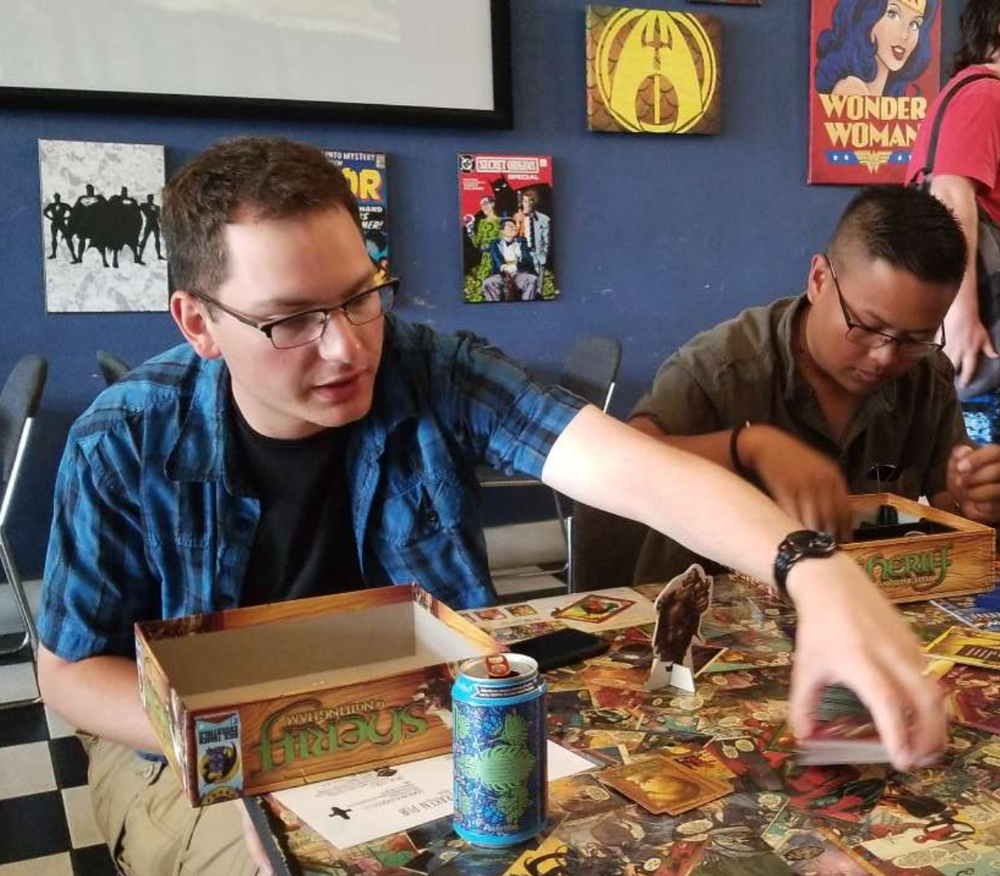
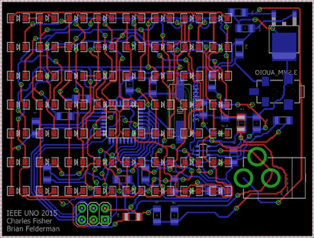

My interest in board games as a hobby started when I was a kid and my family would have regular family game nights.
I enjoy the unique social interaction board games provided. It is a way to both use problem solving skills while
socializing at the same time. I have further expanded my interest in the hobby by joining local table top gaming groups
and expanding my collection of games. Board games offer a variety of mental and social challenges that are unique to
its medium and I don't think I will ever get tired of them.
Hiking
I enjoy hiking for the sense of adventure it provides. Getting a pack of supplies and taking a trip in to the
wilderness even just for a few hours is like a miniature trip to get away from the daily stresses of life.
The solitude of being away from the world helps provide a good environment for self reflection. I also enjoy the
feeling of satisfaction when reaching a scenic view or completing a hard climb up and down a mountain.
Computers

I enjoy working with computers in a lot of different ways. I enjoy working on both the hardware and software
aspects. I think computers provide a neat way of problem solving and interacting with the world. Working on
complicated problems with in a unique set of rules is something I enjoy and the digital logic that computers
work on provides that environment. I have worked with many different aspects of computers from programing in
assembly to designing PCBs.
My Work Experience
Programing Internship: May 2015 to October 2018
During this time I was working part time at Avionics Interface Technologies in Omaha as a technical intern
while I was studying Computer Engineering at UNO. I programed primarily in C++ and Python to write test
code for equipment used to test various avionics components. During this I also learned about software version
control using Tortoise SVN and automated testing using Jenkins. For personal reasons I was unable to finish
my degree in computer engineering and enlisted in the US Air Force.
US Air Force: December 2018 to February 2021
I enlisted into the US Air Force as a Client Systems Technician and was stationed at Hill AFB in Utah. There I worked
in a tier 2 IT support role working on fixing client side computer components. In September 2020 I was deployed
to Afghanistan for three months and then to Kuwait until April 2021 to support on going joint operations.
During this time I preformed IT support for client devices and as worked as a network administrator.
US Space Force: February 2021 to Present
I transferred to the US Space Force while I was deployed as part of the first round of enlisted transfers from the
Air Force. I then moved to Schriever SFB in Colorado Springs to support the Space Force mission there. Currently I
am in training to change to a software development job in the Space Force. The training I am currently receiving is
a 13 week software development boot camp run by Galvanize. The boot camp teaches
software development with Javascript and other tools to support application development and testing.